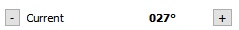

Minos Control Apps Help
This is a brief description of the Minos 2 beta software. As with all beta software is subject to change and the screen layouts may not reflect the current version.
Updated for Version 0.7
Draft - 1/11/17
Introduction
Minos Control Apps allow the control of a rotator and radio using a seperate rotator and rig control applications both communicating via serial and network interfaces to the rotator controller or radio CAT interface. Control can also be achieved from Minos Logger, the rotator application can also be used standalone. While the program can control a range of rotator controllers and radios using the hamlib library, it is not possible to test all the rotator controllers and radios as they are not all available to the developers. Also, some rotator and controllers CAT interfaces may not support all the commands available or we do not fully understand a particular controllers operation. See list of rotators and controllers which are noted as tested. We welcome feedback if you have any information or changes that may be required to support untested rotator and radio models.
The control applications can connect to one or more log pages, or multiple apps can connect to multiple logs. For example you can have two rotator apps one called "70cm Array" and the other called "2m Array", both running at the same time and connected to two different contest logs. The same applies to radio control. You can group apps together to apply to one contest log.
Rotator App
- Minos Rotator is a standalone application that connects to a rotator controller via a Serial or Network Port (Network interface not tested).
- Connects to Minos Logger Application.
- Operates in two modes - when standalone it is in "Local" mode, when connected to logger it is in "Logger" mode
- Can control a family of rotators using the hamlib library.
- Five Antennas can be configured and selected from a pull down menu, one antenna can be selected for control.
- The Antenna can be controlled from the rotator panel or from the buttons in the logger application.
- Overlap rotators are supported in line with hamlib library.
- Control buttons in application and logger - Left (CCW), Right (CW), Stop and Turn (Rotate to bearing)
- Rotator Application Displays Bearing, Backbearing, Overlap Status, Antenna Offset and actual rotator bearing.
- Logger shows rotator status - Rotating CW, Rotating CCW, Rotating to bearing, Stop, Disconnected, Ready.
- Logger Shows Bearing - black text indicates 0 -360, red text indicates > 360 overlap, blue text < 360 overlap, where supported by rotator.
- Logger calculates bearing from archive or by entering a locator.
- Rotator application calculates shortest distance to bearing, using overlap.
- Rotator application can log bearing changes against time in a text log.
Rig App
- Minos Rig Control is a standalone application that connects to a Radio via CAT Serial Port or Network Port (Network interface not tested).
- Rig Control App does not have any controls to control the radio and is a service to other apps.
- Five Radios can be configured and selected via a tab dialog
- Shows Frequency Radio is tuned to
- If transverter conversion is selected shows the transverted frequency
- Shows currently selected Passband and Passband from the radio Rx
Rig Control from Logger
- Quick Select - Allows quick change of frequency to another band
- Frequency Input - CTRL-F or mouse to select frequency box. Frequency can be changed in this box by entry of new frequency.
- Frequency Tuning - CTRL-F or mouse to select frequency box.Radio Tuning once frequency digit is selected tuning activated via up/down arrow keys or mouse wheel when mouse cursor is within the edit box. The tuning step is the digit selected.
- Frequency +5/-5 - Two buttons to move freq +5Khz or - 5Khz.
- Mode Change - In QSO Entry Frame.
- Filter - Select radio passband filter. Not all radios support this function.
- Unlimited Memories. CTRL-1 to CTRL-0 recalls first ten memories, CTRL-SHIFT-1 to CTRL-SHIFT-0 selects memory menu, r selects Read, w selects Write, e selects Edit, c selects Clear current memory.
- Run Memory - Two memories to hold run frequencies. CTRL-[ to recall run memory 1, CTRL-] to recall run memory 2. CTRL-SHIFT-[ and CTRL-SHIFT-] to select run memory menus.
- Data in QSO fields will load memory during a write
- Memory Read will load QSO fields with data and transfer bearing to rotator target bearing field
This shows the logger with a connected radio and rotator. The rigcontrol panel and the rotcontrol panel are visible in logger.
Quick Start - Configuration
Configure Apps for Logger
Download and install Minos.
Start Minos which will display the following splash screen
From the splash screen select the Apps button, or Logger Only if you do not want to run any application.
The Minos App Configuration screen should appear
If there are no entries, select New Entry to get a configuration entry box. You can now select an App from the App Type Drop Down Box.

A Server app should be selected first to allow the apps to communicate with each other and the logger application.
When you select the App, you can leave the default settings. The server app is hidden when running.
This screen shows the Server, RigControl and Rotator apps added in the Configuration.
When complete select Save and Close to save your settings which will take you back to the splash screen. From the splash screen click OK. Logger should now start with the applications you have configured.
Configure RigControl
From the Configure Menu - Select Setup Radios

You can configure up to Five Radios in RigControl. From the Radio Model Drop Down, select the rig you want to control.
You can now fill in the Communication Parameters for your radio. Note! You may need to select handshake, some interfaces require this, others may not.

If you have an Icom you can leave the CIV box empty if your radio uses the default CIV address for that model. If you want to enter a CIV address, please enter in the form of 0xnn where nn is the CIV address. In the CAT configuration of the Icom Radio, ensure CIV Transceive is set to off.
Enter a Radio Name. This can be anything you want to use to identify this configuration.
Click OK to Save the configuration.
From the RigControl Screen, in the Select Radio Drop Down Box, select your configured radio. RigControl will now attempt to communicate with the rig.
If you get an error message, click OK to accept the error which will disconnect the rig. Check your setup parameters and retry the connection by selecting the radio again.
When successful the RigControl Panel will show connected on the Status Line at the bottom and tuning the radio should change the displayed frequency.
Configure Rotator Control
From the Configure Menu, select Setup Antennas to display the Setup Antenna Panel
Select your Rotator Model from the Drop Down Menu.
Configure the Communication Parameters for your rotator.
Enter an Antenna Name for this configuration. Click OK to Save the Configuration.
From the Rotator Control Panel, select your Antenna from the Select Antenna Drop Down. The Rotator Control Panel will now try to connect to your rotator.
Successful connection is confirmed by the Connected message in the Status line at the bottom of the panel. If you get an error message, confirm the message by clicking ok which will disconnect the panel allowing you to recheck the setup values.
Connecting Apps to Logger
The default settings allow quick connection to Logger. Create a Contest.
In the Contest Details Panel ensure <DefaultApps> is showing in the Apps Box. If you haven't changed the App Instance Names this will suffice to allow the Contest Log to Communicate with your rotator and/or rig control apps.
Rotator App
Rotator - Configure Menu

Menu Items to Configure Rotator
Edit Presets - Configuring Presets Change name and target bearing for each Bearing Preset.
Setup Antennas - Setup Antennas, Names and Rotator Parameters.
Log Heading - Rotator Position Log Setup Bearing Log Path, Name and Enable Log
TraceLog - Trace Log Check item to enable tracelog, uncheck to disable tracelog.
Rotator - Setup Antennas
Upto five named antennas can be configured in the Rotator Application.
Note these names are important as they are used to select the antenna from logger
From the Configure drop down menu, select Setup Antennas. The dialog box below should appear. The options that appear will depend upon the capabilities of the selected rotator. For example if the controller uses a serial port the communication parameters shown below will appear. If it has a network interface, then network address and port boxes will appear.
Minos Rotator uses a concept called Rotator Type. This defines the minAzimuth, maxAzimuth, CWEndStop and CCWEndStop bearing values.
| Rotator Type | MinAzimuth | MaxAzimuth | cwEndStop | ccwEndStop | Overlap Avail | South Stop Avail |
| ROT_0_360 | 0 | 360 | 360 | 0 | No | Yes - If set cwEndStop = 179, ccwEndStop = 181 |
| ROT_0_450 | 0 | 450 | 450 | 0 | Yes - If turned off, rotator becomes a ROT_0_360 type | No |
| ROT_NEG180_180 | -180 | 180 | 180 | -180 | No | No |
| ROT_NEG180_540 | -180 | 540 | 540 | -180 | No | No |
Note! If you change any value in the Current Selected antenna, you will be prompted to reload the values. You can choose to skip and the values will be loaded when the program is restarted.
Antenna Name
Enter the name to be given to a rotator configuration, for example 6 metre or 70cm.
Note! A name is required to allow an antenna to be selected.
Rotator Model
The drop down shows a list of the rotator models (controller protocols) that are currently supported. Note not all rotator models have been tested with this program. A list of tested rotator models is shown here Supported Rotators. If your model is not on the list please help to test and provide feedback on possible errors.
Once a Rotator Model is selected the options for that model will be displayed in the setup panel.
S Stop - Check box
Only available with ROT_0_360 types, this will set the rotator endstops to 181 and 179 degrees.
Overlap - Check box
When available, uncheck to turn off overlap. Rotator will only rotate between 0 - 360 degrees.
Note! If Overlap is unchecked then the Overlap box will not be displayed on the Rotator Display.
Note! If Overlap is unchecked and an antenna is sitting in an overlap region, you may not be able to rotate the antenna. The antenna will need to be manually moved < 360 or > 0
Offset
Enter an antenna offset value if required. Value can be max +90/-90. To support antenna mounted offset from rotator bearing. Rotator bearing is always shown in Actual on status line.
Comport
Drop down box to select Serial Comport Rotator is connected to on the computer
Speed
Drop down list to select Serial Port Baud Rate
Data Bits
Drop down list to select Serial Port Number of Data Bits.
Stop Bits
Drop down list to select Serial Port Stop Bit value.
Parity
Drop down list to select Serial Port Parity Bit value.
Handshake
Drop down list to select Serial Port Handshake.
OK
Click OK to save the Antenna Settings, Cancel to quit without saving.
Rotator - Edit Presets
From the Configure Menu - Select Edit Presets.

Enter a name or callsign in the name box and the target bearing in the bearing box.
Click Save or Enter to close and Save
Click Cancel or ESC to close with no save.
Rotator - Control Screen
Screen Functions
Bearing Display
Main
Shows the forward bearing.
Back
Shows the reverse compass bearing.
Overlap
When the rotator is in an overlap region, the indicator shows red for bearings > 360 and blue for bearings < 0.
Note! If Overlap is unchecked in Antenna Setup, then the Overlap box will not be displayed on the Rotator Display.
Antenna Select
Antenna Select drop down box. Shows list of antennas, select an antenna name to connect to your rotator controller. It will also save this Antenna Name as your current antenna. If an error occurs reselect the antenna to try connection again.
Note! Minos Rotator Controller will automatically connect to the Current Antenna when Minos Rotator Controller starts. If an error occurs, a disconnection will occur, please reselect the antenna via the drop down to try again. If communication fails again, please verify settings in rotator controller or Minos Rotator.
Note! If a change to settings is made to the current selected antenna, then you will be prompted to reload the settings.
Note! An antenna must have a name to allow selection.
Target Bearing
Manually type in a target bearing value from 0 - 360. Hit Enter or Control T to start rotation to entered Target Bearing. The target bearing will be highlighted to allow quick entry of new bearings.
Turn Button
Press button to rotate antenna to target bearing. Button turns orange to indicate Turn Button is on. Shortcut key is Control T or Enter.
Stop Button
Press button to stop rotation. Button is orange while rotator braking is in progres. Shortcut key is Control S.
Left (CCW) Button
Press button to start counter-clockwise rotation, the button is Orange while rotating. Shortcut key is Control L. NOTE! This is a latch button, press again to stop or the Stop button.
While rotating the bearing is checked for end stop, if reached a stop will be automatically issued.
Right (CW) Button
Press button to start clockwise rotation, the button is Orange while rotating. Shortcut key is Control R. NOTE! This is a latch button, press again to stop or the Stop button.
While rotating the bearing is checked for end stop, if reached a stop will be automatically issued.
NOTE! If a control button is selected while the rotator is moving, a stop command is issued before the selected command is issued.
Preset Buttons
Upto ten headings can be preset with the buton label showing the callsign or heading name.
Press Preset to turn to heading. Shortcut key is Control -number of preset- Preset 10 is Control 0
Compass Dial
Provides graphical indication of compass bearing. The Overlap box will only show for rotators supporting overlap. The box will be red when the bearing is > 360 and blue when the bearing is < 0 on the rotator.
Status Bar
Provides status information
Shows Rotator connection status and serial parameters. Can also show other status messages like Comport missing or no antenna defined.
Offset - Shows antenna Offset set.
Actual - Shows the actual rotator bearing.
RawRot - Shows the actual rotator bearing received on the interface.
Rotator - Support CW/CCW Commands
Some rotator controllers do not support a Rotate Left (CW - Clockwise) or Rotate Right (CCW - Counter clockwise) Command. See table below
To allow the CW and CCW buttons to function, the command rotate to minAzimuth (typically 0 degrees) is sent for CCW command and the command rotate to maxAzimuth (typcially 360 degrees) is sent for CW. The CW and CCW buttons are latching, selecting the buttons again will stop rotation. Rotation will also stop when the rotator reaches the endstop if a stop command is not sent first.
Rotator - View Current Config
It is possible to view the current rotator configuration parameters from the Help Menu. Select About Rotator Config.
Click OK to Close.
Rotator - Logger Controls
The rotator buttons will only appear when the Rotator application is communicating to the logger.
Target
Target bearing entry box. Enter a bearing into this box. Enter bearing 0 - 360.
Bearing calculated from a locator in the QSO or if a callsign is entered and found in the archive, and the locator is transfered using F12, then this bearing can be used by the rotator application. In both cases click the Turn button or Control-T to rotate to the bearing.
Turn
The Turn button starts a rotation based upon the bearing in the Target box. Click or CTRL-T or Return to start rotation. If the bearing is invalid and error message will appear. The button will turn orange during rotation.
Stop
Click or CTRL-S to stop rotation.
(CCW) Left
Click or CTRL-L to rotate antenna Left or Counter Clockwise. The button turns orange during rotation. Click or CTR-L again to stop or use the stop button.
(CW) Right
Click or CTRL-R to rotate antenna Right or Clockwise. The button turns orange during rotation. Click or CTR-R again to stop or use the stop button.
NOTE! If a button is selected when rotator is moving, a Stop command is issued before the selected command is issued.
Bearing and Jog Antenna Buttons

The rotator bearing is shown here. It is black text 0 - 360, red text > 360, blue text < 0.
The plus/minus buttons will job the antenna +3 degrees or - 3 degrees.
Rotator Name and Status Messages

Shows the name of the antenna "connected" to the contest log. The connection status of the rotator controller and the status messages recieved from the rotator controller.
Rotator - Position Log

The Rotator bearing can be logged during a contest. Select Log Heading from the Configure Menu.
Log Directory - sets the directory to log the bearing.
Log Filename - sets the filename of the log.
Note! Bearings will continue to be appended to this file every time Minos Rotator is started. If you want a new file, either copy and delete this file or rename the file name here.
Bearing Difference - The bearing difference before a new bearing is logged.
Logging Enabled - Checked bearings will be logged, Unchecked, no logging of bearings.
OK - Save settings.
Cancel - Quit without saving settings.
Example Log
Mon Jun 12 18:19:46 2017 Bearing is 320 Degrees
Mon Jun 12 18:19:47 2017 Bearing is 324 Degrees
Mon Jun 12 18:19:48 2017 Bearing is 326 Degrees
Mon Jun 12 18:19:49 2017 Bearing is 326 Degrees
Trace Log
A tracelog is available for diagnostic purposes. This can be enabled from the Configure menu where the TraceLog line can be enabled or disabled by checking the menu item. It is suggested that this should be disabled in normal operation.
Example tracelog with current antenna settings.
09:28:07.731 *** Antenna Updated ***
09:28:07.731 Rotator Name = Test Antenna
09:28:07.731 Rotator Model = 603 Yaesu,GS-232B
09:28:07.731 Rotator Number = 603
09:28:07.731 Rotator Comport = COM8
09:28:07.731 Baudrate = 19200
09:28:07.731 Databits = 8
09:28:07.731 Stop bits = 1
09:28:07.731 Handshake = 0
09:28:07.731 Antenna Offset = 0
09:28:07.731 Current Max Azimuth = 450
09:28:07.731 Current Min Azimuth = 0
09:28:07.731 South Stop Flag = 0
09:28:07.731 Overrun flag = 1
09:28:07.731 Rotator Max Baudrate = 9600
09:28:07.731 Rotator Min Baud rate = 150
Rig Control Application
When the rigcontrol application starts this is the screen that will appear.
The radio can't be controlled from the rigcontrol panel, it provides rig services to other Minos apps.
Configure - Setup Radios
Configure - TraceLog, turns on the trace log. Turned off in normal operation.
Select Radio - Drop down to select a radio.
Tvert Freq. - Shows the transverted frequency if enabled for this radio. This box is only shown when Transvert is Enabled.
Mode - Shows the radio mode.
Mgm Mode - Shows the radio mode when MGM mode is selected in logger.
Passband - Shows the mode state (NAR/NOR/WIDE), the selected passband freq, the passband read from the radio.
Status Line - Connected/Disconnect Status
Radio - Setup Radios
Setup Radios - Select to Setup radios.
TraceLog - Select to enable tracelog. Normal operation is off.
Radio Setup
This shows the radio setup. Five radios can be configured.
The boxes that appear in the setup will depend upon the radio connection type. In this example it is a Serial interface.
Radio Name - Enter the radio name. This is used in the rigcontrol app to select a radio.
Radio Model - Select your radio model from the drop downlist.
CIV - If your radio is an Icom leave blank to use the default CIV or enter the CIV number e.g. 0x66.
Comport - Select the Comport that the radio is connected to. Only active ports will be displayed.
Speed - Port Speed being used in this CAT interface.
Data Bits - Select Data bits.
Stop Bits - Select stop bits.
Parity - Select parity bits.
HandShake - Select handshake. Ensure this is corret for your interface.
TransVert Enable - Check if you want displayed frequency to include a transvert offset.
TransVert Offset - Enter the transvert offset frequency if transVert Enable is checked.
Negative Offset - Check if the transvert offset is negative.
MGM Mode - This is the mode the radio will use when MGM is selected in Logger.
Select OK or Enter to Save
Select Cancel or ESC to quit without saving.
RigControl in Logger
This shows the rigcontrol within logger and will show when a radio has been connected to logger.
Quick Select
The Quick Sel drop down allows the quick change of band. It will also set the frequency display reducing the leading zero's shown.
Frequency Box
Freq. - This shows the current frequency. If transvert is enabled that is the calculated frequency shown.
Select inside the Freq. box to enter a new frequency or use CTRL-F. The border will turn red to show it is in edit mode. Enter to select new frequecny or escape to cancel.
Tuning the radio
When the Frequency box is in edit mode, you can use the Up/Down Arrow keys to change the frequency or the mouse wheel while the mouse cursor is in the frequency box. The step rate is based upon the selected the digit. Change the step rate by moving to another digit using the Left/Right Arrow keys or select with mouse. The frequency is change immediately.
+/- 5Khz Buttons
Clicking these buttons adds +/- 5Khz to the radio frequency. Useful if you want to call someone and move to another frequency if the frequence you called on isn't yours.
Mode Display
Next to the Quick Select box is the current radio mode.
Filter
Note! Not all radios support selecting the passband.
Rigcontrol reads the passband supported by the radio for Narrow, Normal and Wide in all the modes supported by Minos. Selecting the radio button will select the filter bandwidth for the currently selected mode on the radio. These are stored in rigcontrol by mode.
Mode Select

The mode drop down is in the QSO entry frame as this can be used without the radio. Select desired mode.
Run Frequency Memories

Two run freq menus are provided. Two store a frequency, select mode and tune to the desired frequency. Select the button drop down arrow to open the menu, select Write and OK to store.

Run Button Drop Down Menu.

Run Button Write and Edit Menu. Write pulls the current frequency and mode to the memory, Edit allow you to edit a stored Freq.

The run button label displays the current store frequency. Blank memory shows *** in the label.

If you move the mouse over the button the stored details are displayed.
Run Memory Short Cut Keys
CTRL-[ Recall Run Memory 1
CTRL-] Recall Run Memory 2
CTRL-SHIFT-[ Drop Down Run Memory 1 Menu r selects Read, w selects Write, e selects Edit, c selects Clear.
CTRL-SHIFT-] Drop Down Run Memory 2 Menu r selects Read, w selects Write, e selects Edit, c selects Clear.
RigControl - Memories
Memories are stored with the contest log.
There is no limit to the number of memories. Memories can also be used without rigcontrol as an aid-memoire.

Select Memories from the Clock Drop Down Menu.

RigControl - Add Memory
Initially there are no memories. Select New Memory to add a memory button.

A memory Write box will appear. If QSO details are entered in to the QSO fields these will be pulled in to the memory fields.
Click Ok to Save the memory.

The button appears in the memory box with the callsign data as the label. Repeat for new memories.

Move the mouse over the button to see the details stored in the memory.
RigControl - Recall Memory
Click the memory button to recall the memory, or CTRL-1 to CTRL-0 for the first ten memories.
Information from the memory will populate the QSO fields when recalled.
RigControl - Clear Memory
Select the Memory Menu and select Clear to remove the memory button.
Or use CTRL-SHIFT-1 CTRL-SHIFT-0 for the first ten memories, followed by the letter c as a shortcut.
RigControl - Memory Menu

Click the down arrow on the button, or CTRL-SHIFT-1 to CTRL-0 for the first ten memories, to select the memory menu.
Select Read to recall the memory.
Select Write to Write a new memory
Select Clear to Clear and remove the memory button.
RigControl - View Current Config
To view the current rigcontrol config, from the Help menu select About Radio Config.

RigControl - Trace Log
A tracelog is available for diagnostic purposes. This can be enabled from the Configure menu where the TraceLog line can be enabled or disabled by checking the menu item. It is suggested that this should be disabled in normal operation.
ShortCut Keys
Rotator Application
| Function | Shortcut |
|---|---|
| Stop | CTRL-S |
| Rotate Left (CCW) | CTRL-L |
| Rotate Right (CW) | CTRL-R |
| Rotate to Bearing - Turn | CTRL-T |
| Rotate to Bearing - Turn | Enter (When focus is in Turn bearing box) |
| Preset 1 | CTRL-1 |
| Preset 2 | CTRL-2 |
| Preset 3 | CTRL-3 |
| Preset 4 | CTRL-4 |
| Preset 5 | CTRL-5 |
| Preset 6 | CTRL-6 |
| Preset 7 | CTRL-7 |
| Preset 8 | CTRL-8 |
| Preset 9 | CTRL-9 |
| Preset 10 | CTRL-0 |
Logger Application - RotControl
| Function | Shortcut |
|---|---|
| Stop | CTRL-S |
| Rotate Left (CCW) | CTRL-L |
| Rotate Right (CW) | CTRL-R |
| Rotate to Bearing - Turn | CTRL-T |
| Rotate to Bearing - Turn | Enter (When focus is in Turn bearing box |
Logger Application - RigControl
| Function | Shortcut |
|---|---|
| Select Frequency Edit Box | CTRL-F |
| Run Memory 1 Recall | CTRL-[ |
| Run Memory 2 Recall | CTRL-] |
| Run Memory 1 Menu | CTRL-SHIFT-[ |
| Run Memory 1 Menu | CTRL-SHIFT-] |
| Memory 1 Recall | CTRL-1 |
| Memory 2 Recall | CTRL-2 |
| Memory 3 Recall | CTRL-3 |
| Memory 4 Recall | CTRL-4 |
| Memory 5 Recall | CTRL-5 |
| Memory 6 Recall | CTRL-6 |
| Memory 7 Recall | CTRL-7 |
| Memory 8 Recall | CTRL-8 |
| Memory 9 Recall | CTRL-9 |
| Memory 10 Recall | CTRL-0 |
| Memory 1 Menu | CTRL-SHIFT-1 |
| Memory 2 Menu | CTRL-SHIFT-2 |
| Memory 3 Menu | CTRL-SHIFT-3 |
| Memory 4 Menu | CTRL-SHIFT-4 |
| Memory 5 Menu | CTRL-SHIFT-5 |
| Memory 6 Menu | CTRL-SHIFT-6 |
| Memory 7 Menu | CTRL-SHIFT-7 |
| Memory 8 Menu | CTRL-SHIFT-8 |
| Memory 9 Menu | CTRL-SHIFT-9 |
| Memory 10 Menu | CTRL-SHIFT-0 |
| Memory Menu Read | r |
| Memory Menu Write | w |
| Memory Menu Edit | e |
| Memory Menu Clear | c |
Rotator Protocols
The Minos Rotator Status untested means that the protocol has not been tested with Minos Rotator. It doesn't mean it will not work. Users should proceed with caution and any issues reported back to the developers. If tests are successful, please report this back to the developers so the table can be updated.
| Rig # | Mfg | Model | Version | Support CW/CCW Cmds | Hamlib Status | Minos Rotator Status |
|---|---|---|---|---|---|---|
| 1 | Hamlib | Dummy | 0.2 | Yes | Beta | Untested |
| 2 | Hamlib | NET rotctl | 0.3 | Yes | Beta | Untested |
| 201 | Hamlib | EasycommI | 0.4 | Yes | Beta | Untested |
| 202 | Hamlib | EasycommII | 0.4 | Yes | Beta | Untested |
| 204 | Hamlib | EasycommIII | 0.4 | Yes | Alpha | Untested |
| 301 | XQ2FOD | Fodtrack | 0.2 | No | Stable | Untested |
| 401 | Idiom Press | Rotor-EZ | 2010-02-14 | No | Beta | Untested |
| 402 | Idiom Press | RotorCard | 2010-02-14 | No | Untested | Untested |
| 403 | Hy-Gain | DCU-1/DCU-1X | 2010-08-23 | No | Untested | Untested |
| 404 | DF9GR | ERC | 2010-08-23b | No | Alpha | Untested |
| 405 | Green Heron | RT-21 | 2014-09-14 | No | Alpha | Untested |
| 501 | SARtek | SARtek-1 | 0.2 | No | Untested | Untested |
| 601 | Yaesu | GS-232A | 0.3 | Yes | Beta | Untested |
| 602 | Yaesu | GS-232 | 0.1 | No | Beta | Untested |
| 603 | Yaesu | GS-232B | 0.2 | Yes | Beta | Beta |
| 604 | F1TE | GS232/F1TE Tracker | 0.1 | No | Beta | Untested |
| 701 | WA6UFQ | PcRotor | 0.1 | No | Untested | Untested |
| 801 | Heathkit | HD 1780 Intellirotor | 0.1 | No | Beta | Untested |
| 901 | SPID | Rot2Prog | 1.0 | Yes | Stable | Untested |
| 902 | SPID | Rot1Prog | 1.0 | Yes | Stable | Untested |
| 1001 | M2 | RC2800 | 0.1.1 | No | Beta | Untested |
| 1101 | EA4TX | ARS RCI AZ | 0.1 | Yes | Beta | Untested |
| 1201 | AMSAT | IF-100 | 0.1 | No | Untested | Untested |
| 1301 | LA7LKA | ts7400 | 0.1 | Yes | Beta | Untested |
| 1401 | Celestron | NexStar | 0.1 | No | Untested | Untested |
| 1501 | DG9OAA | Ether6 (via ethernet) | 0.1 | Yes | Beta | Untested |
| 1601 | CNCTRK | CNCTRK | 0.1 | No | Untested | Untested |
| 1701 | Prosistel | Prosistel D | 0.3 | No | Beta | Untested |
Rotator Controllers
A Rotator Controller may support multiple rotator protocols, and while it may support a particular rotator protocol, it may not support all the commands. It is also possible that the hamlib library may only support a limited set of commands. This section notes rotator controllers that have been tested working, the protocol used and other relevant settings. If the rotator controller you are using is not listed here and Minos Rotator works succesfully, please forward the details so they can be added to the table.
| Controller Model | Protocol Number | Manufacturer | Procotol Name | Baud Rate | Data Bits | Stop Bits | Parity | Handshake | Notes | Minos Rotator Status |
|---|---|---|---|---|---|---|---|---|---|---|
| Easy Rotator Control | 603 | Yaesu | GS232B | 9600 | 8 | 1 | None | None | Requires V4.0 firmware to support CW and CCW commands | Tested |